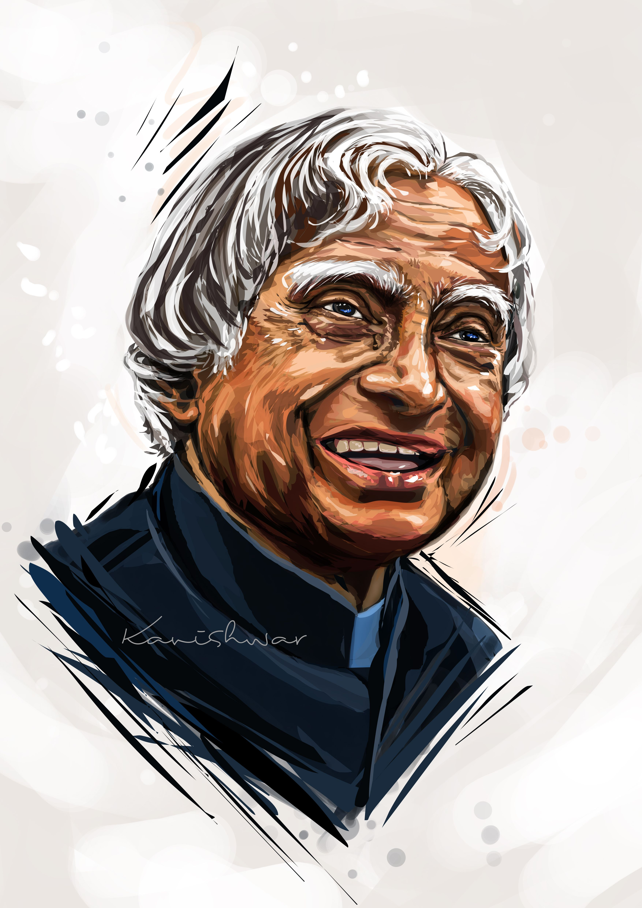

Dr.A.P.J Abdul Kalam
Missile man of India
1931-2015

-
1931Born in Rameshwaram, Tamil Nadu Avul Pakir
Jainulabdeen Abdul Kalam was born to Jainulabdeen, a boat owner, and
homemaker Ashiamma. He went to Ramanathapuram Schwartz Matriculation
School and worked from an early age to supplement the family income
-
1954 Graduates in Physics Kalam graduates in physics
from Saint Joseph's College, Tiruchirappalli. He moves to Madras to
pursue further education after graduation.
-
1960Joins DRDO as scientist Kalam completes his
degree in Aeronautical Engineering from Madras Institute of Technology
(MIT) and joins the Defense Research and Development Organization
(DRDO) as scientist.
-
1969Moves to ISRO Kalam moves to the Indian Space
Research Organisation (ISRO) where he helms India's first Satellite
Launch Vehicle (SLV-III
-
1980Lead's India's entry in the Space club Kalam
leads India’s efforts to enter the space club by putting the Rohini
satellite in Earth's orbit with the first indigenous SLV-III
-
1981Recieves the Padma Bhushan Kalam recieves the
Padma Bhushan for his contribution to the field of science and
technology
-
1990Develops Prithvi and Agni missiles As the chief
of the Integrated Guided Missile Development Programme, he is credited
with the development and operationalisation of Agni and Prithvi
missiles
-
2001Serves as India’s Chief Scientific Adviser Serves
as Principal Scientific Advisor to the Government of India
-
2002Elected as India's 11th President Kalam is
elected the 11th President of India succeeding KR Narayanan. He won
the 2002 presidential election with an electoral vote of 922,884.
During his five years in office, he was fondly called ‘The People’s
President'
-
2012Launches 'What Can I Give Movement Kalam launches
the ‘What Can I Give Movement’, a programme for the Indian youth aimed
at defeating corruption
-
2015Passes away in Shillong, Meghalaya Kalam passes
away aged 83, after collapsing because of a cardiac arrest while
delivering a lecture at IIM Shillong
A Tribute by M.Parvesh